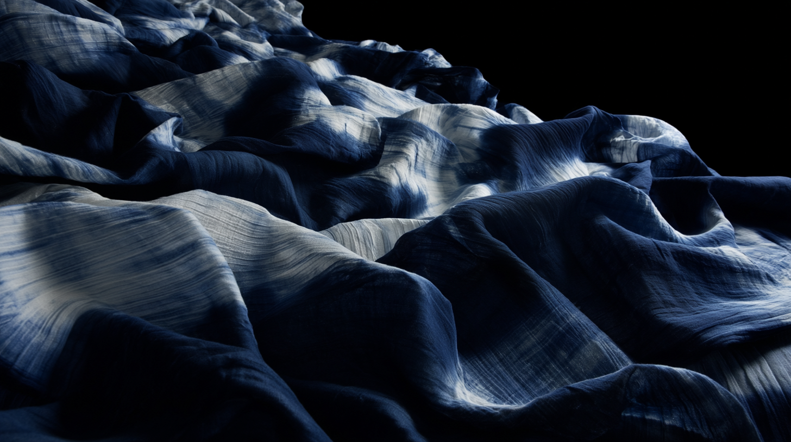
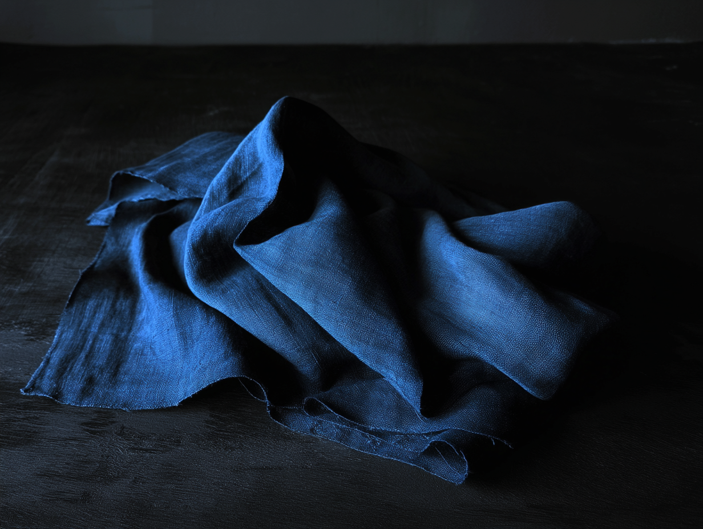
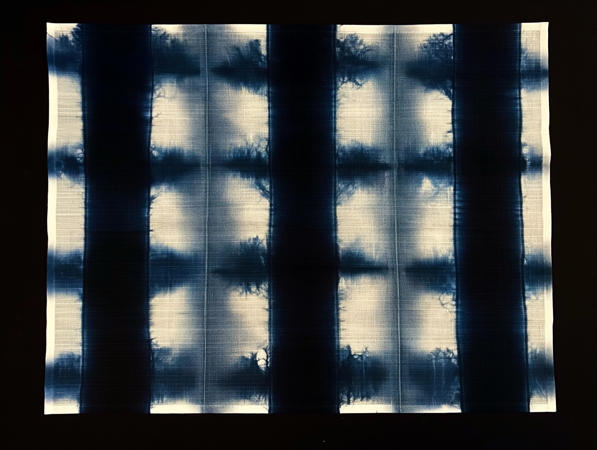
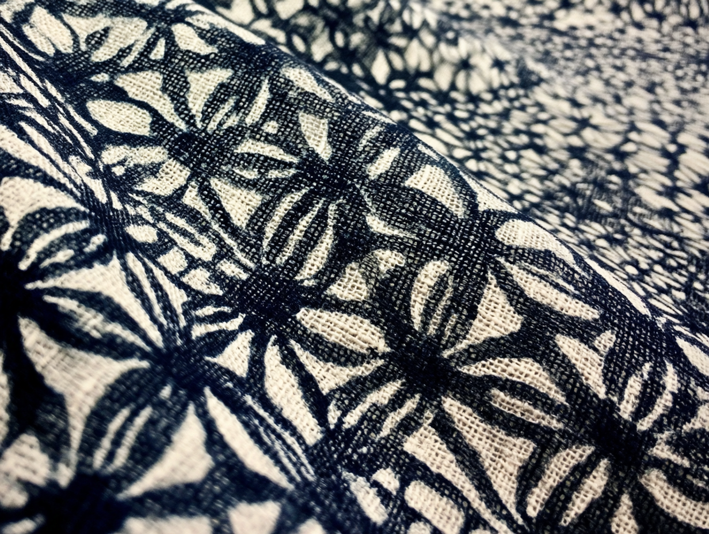
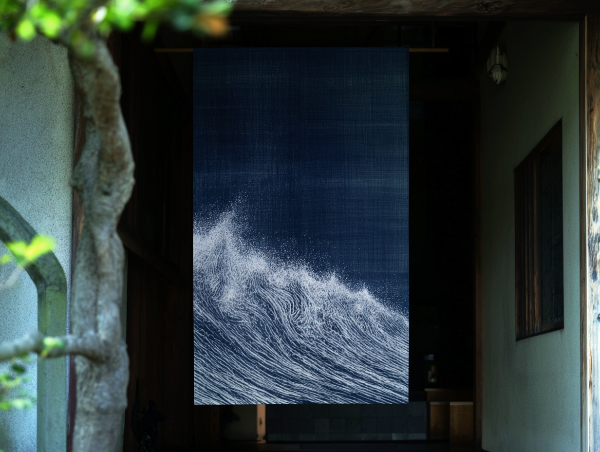
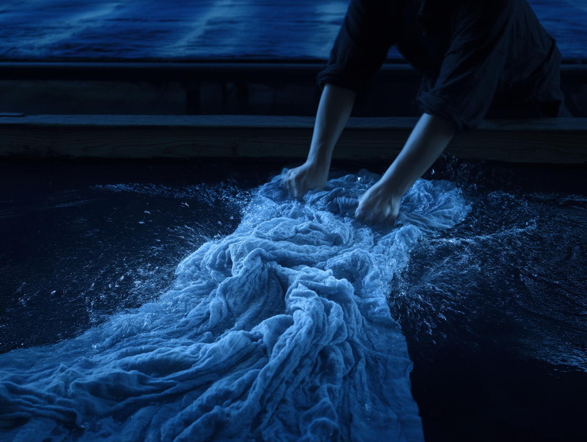
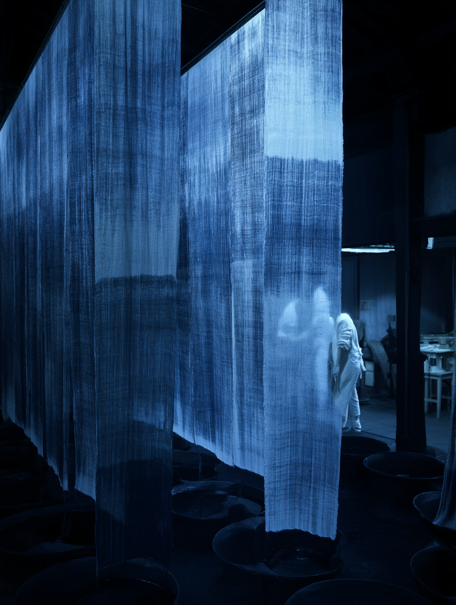
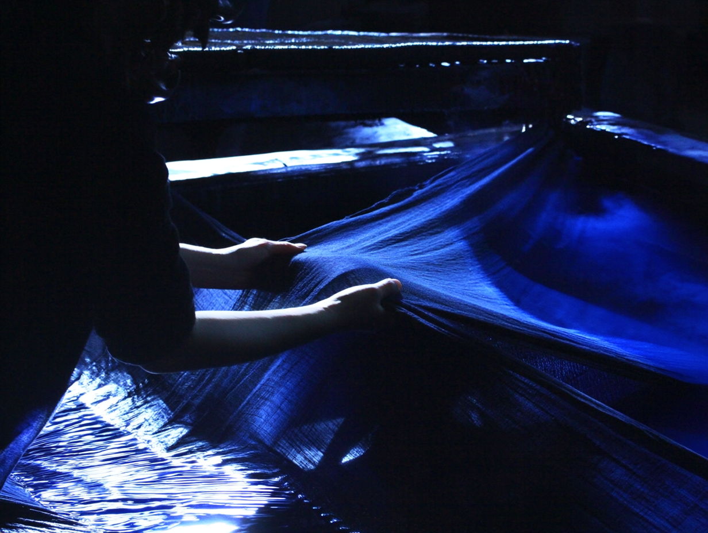

Indigo Dyeing · 京都府 · Est. 1948
Scroll
Philosophy
天然の藍は生きています。発酵する藍壺と向き合い、気温と湿度を読み、布の繊維と対話する。同じ工程でも、二度と同じ色は生まれない。それが藍染めの本質であり、私たちが手放せない理由です。
76
年の歴史
藍
天然素材のみ
18
か国へ出荷
手
全工程手仕事
Works





Process
01
蓼藍の葉を乾燥・発酵させ「すくも」を作ります。灰汁・石灰・ふすまとともに甕に仕込み、温度管理しながら数週間かけて染料として育てます。
02
天然繊維（木綿・麻・絹）の油分や不純物を取り除き、藍の色素が均一に定着するよう精錬・下処理を行います。

03
藍壺に布を浸し、引き上げて空気に触れさせる「酸化」を繰り返します。この浸染と酸化の繰り返しが、深みのある藍色を生み出します。
04
染め上がった布を丁寧に水洗いし、余分な藍を落とします。乾燥・整形を経て、一点一点ていねいに仕上げ、完成となります。


About
1948年、京都西陣にて創業。初代・中村宗藍が天然藍染めの復興に生涯を捧げ、現在は三代目が伝統技法を継承しながら現代の感性で新たな作品を生み出しています。国内外のギャラリー・百貨店への納品のほか、アーティストとのコラボレーションも積極的に行っています。
Contact
作品のご購入、オーダーメイド、企業・ブランドとのコラボレーション、取材のご依頼など、お気軽にお問い合わせください。